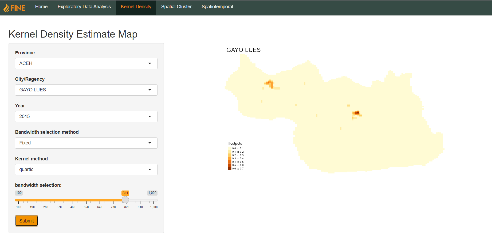

User Guide
This is the user guide for FINE. You can access the Shiny application here.
Important Terminology
(Fire) hotspots: Locations where the temperature detected by monitoring satellites is higher than surrounding areas (Indonesian Meteorology, Climatology, and Geophysical Agency, 2023)
Administrative Divisions of Indonesia:
Province: First-level administrative division - corresponds to “provinsi” or “daerah istimewa” (as in the case of Aceh)
City/Regency: Second-level administrative division - corresponds to “kota”/“kabupaten” respectively
District: Third-level administrative division - corresponds to “kecamatan”
Sub-district: Fourth-level administrative division - corresponds to “desa” or “kelurahan”
Navigation
The Navigation bar is the primary mode of navigating the app. It is present at the top of every page.

By default, un-selected pages appear as white text. The active page has a darker background and the text is highlighted orange. Clicking on an un-selected link will bring you to that page.
Upon accessing the application for the first time, the Home page will be the active page by default. It provides an overview of the application.
Exploratory Data Analysis
Point Map
The first tab of the Exploratory Data Analysis page is the interactive point map. It allows users to view information about individual fire hotspots that have been detected.

There are several aspects users can filter by. Users can select a specific area to examine, be it by province, city/regency, district, or sub-district. Users can also select one or multiple satellite types that the points were detected by, as different satellites may give different levels of detail and accuracy in detecting fire hotspots. Additionally, users can also select a date range that they would like to filter by using a slider. The left knob represents the start date and the right knob represents the end date.
By default, the latest hotspots within the date range will be highlighted in red, whereas all other points will be colored pink.
However, users can also choose to color the points by the confidence levels with which the satellites detected the hotspots. This is done by selecting the “Color by confidence level?” checkbox:

Time Series
The second tab of the Exploratory Data Analysis page allows users to view time series plots of aggregated count of hotspots within a year.

Like the point map, users can select a specific area to examine, be it by province, city/regency, district, or sub-district. However, instead of a flexible date range, users can only select a specific year from 2015-2019, as the count of hotspots are aggregated by month.
Users can also select one or more confidence levels to filter by. In this case, the count of hotspots will be aggregated by both month and confidence level, with each time series being displayed in a different color according to the confidence level.

Kernel Density
The kernel density estimation mapping is done to show the density of point data on the map. In this case, the point data is the forest fire hotspots across the map.
The users can select city, then from city they can then select which province and from that province, which city they want to observe. Some cities will take longer to load in than others. The city field must be filled in before the map could be plotted. The user then has to choose the year they wish to observe, their choices are from 2015 to 2019. The users can pick whether they want automatic bandwidth for the city being observed, or if they would rather pick fixed bandwidth so that they can pick their bandwidth, their choices ranging from 100 to 1000 bandwidth. For fixed bandwidth, there are four kernel functions that the user can pick from : quartic, gaussian, disc, and epanechikov.
After selecting all the desired fields, the user may press submit. After submitting the fields, the user needs to wait for a bit before the map is plotted out and loaded in. The legend will give context to the density of the points observed.

Spatial Cluster
Spatiotemporal
Space-time K-function
The space-time K-function is a statistical tool used in spatiotemporal analysis to study the clustering or dispersion of point events in both space and time. It extends the classical spatial Ripley’s K-function to incorporate the time dimension and allows for the analysis of spatiotemporal point patterns. In the inhomogenous case, it takes into account the spatial and temporal variation in the intensity of the point process under study. Meanwhile, the homogenous case assumes that the underlying process generating the point pattern is constant in space and time.
Users can input a specific sub-district to look for spatiotemporal autocorrelation throughout a specific year. All fields of the filter must be filled before an output can be computed.
There are three possible types of outputs, adjusted by the Plot Type selection dropdown: Contour, Image, and Perspective.


For perspective plots, there are two additional parameters that can be adjusted: azimuthal angle and colatitude. They are in the form of sliders bounded from 0-360. This allows users to adjust the perspective of the 3D plot. Azimuthal Angle rotates the perspective horizontally, whereas Colatitude rotates the perspective vertically.
Emerging Hot Spot Analysis (EHSA)
Emerging Hot Spot Analysis (EHSA) is a spatiotemporal analysis technique used to identify locations where the density of a specific event is increasing or decreasing rapidly over time, referred to as “hot spots” and “cold spots” respectively.

Users can perform EHSA on an areal basis using aggregated count of fire hotspots within a province or a city over a certain year. The analysis is done by computing local Gi* statistics on each of the sub-districts and performing a Mann-Kendall statistical test. Users can further customise how the test is performed by specifying number of time lags, number of simulations, and a significance threshold.
Mann-Kendall
The Mann-Kendall test is a non-parametric statistical test used to detect whether a set of data values is monotonically increasing or decreasing, as well as the statistical significance of the trend. It is particularly useful when the data is not normally distributed or when the data has a significant amount of noise. This section is aimed to help users further drill down on the insights they have gotten from the EHSA tab by performing Mann-Kendall tests on computed Gi* statistics within a sub-district in a specified year.
Additionally, users can specify the number of simulations and type of contiguity weights they want to use to compute the Gi* statistics.

The output is a time series plot showing the change of Gi* statistic over the year and a table containing the result of the Mann-Kendall test.
Errors

When an error occurs, a popup message stating the cause of the error will appear. Click “Ok” to close the popup, then adjust the parameters accordingly to fix the error.